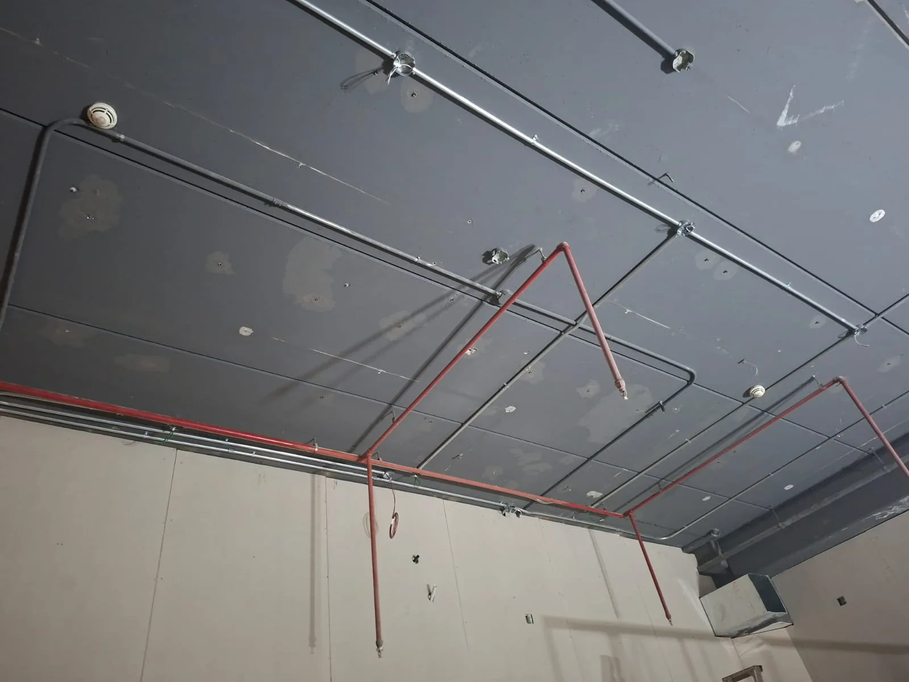

أعمال الكهرباء ليست مجرد تمديدات وأسلاك، بل هي جزء أساسي من راحة استخدام المنزل أو المكتب أو المحل التجاري. التوزيع الخاطئ للأفياش أو مفاتيح الإضاءة قد يسبب إزعاجًا يوميًا، وقد يحتاج إلى تكسير أو تعديلات بعد انتهاء التشطيب.
لذلك يجب أن تبدأ قرارات الكهرباء مبكرًا، قبل إغلاق الجدران والأسقف، وقبل اختيار الديكور النهائي. كل نقطة كهرباء يجب أن تكون مرتبطة بطريقة استخدام المساحة، توزيع الأثاث، الأجهزة، الإضاءة، التكييف، والشاشات أو نقاط العمل.
توزيع نقاط الكهرباء حسب الاستخدام
قبل تمديد الكهرباء، يجب معرفة أماكن الجلسات، الأجهزة، المكاتب، التلفاز، المطبخ، غرف النوم، والمداخل. في المشاريع التجارية يجب التفكير في تجربة العميل، أماكن العرض، الأجهزة، واللافتات أو الإضاءة الموجهة.
- تحديد أماكن الأجهزة ذات الأحمال العالية.
- مراجعة توزيع الأفياش حسب الأثاث المتوقع.
- تنسيق المفاتيح مع حركة الدخول والخروج.
- تجهيز نقاط احتياطية عند الحاجة.
الإضاءة جزء من التصميم
الإضاءة تؤثر على شكل التشطيب والديكور. الإنارة العامة وحدها لا تكفي دائمًا؛ قد تحتاج إلى إضاءة مباشرة، إضاءة مخفية، إضاءة موجهة، أو توزيع خاص للمكاتب والمحلات. لذلك يجب تنسيق الإضاءة مع الديكور قبل إغلاق الأسقف.
الكهرباء في مشاريع الترميم
في الترميم، قد تكون التمديدات القديمة غير مناسبة للاستخدام الحالي. لذلك يجب فحص الحالة الحالية قبل الدهانات والأرضيات، وتحديد ما إذا كان المطلوب إعادة توزيع، صيانة نقاط، أو إضافة تجهيزات جديدة.
علاقة الكهرباء بالتشطيب والديكور
أي تعديل في الكهرباء بعد التشطيب قد يؤثر على الدهانات والأسقف والأرضيات. لذلك من الأفضل مراجعة كل النقاط قبل دخول مرحلة التشطيب النهائي، وربطها بخطة الديكور والتصميم الداخلي.
روابط داخلية مهمة
الخلاصة
تنسيق أعمال الكهرباء في الرياض قبل التشطيب يختصر الوقت ويحسن النتيجة ويقلل التعديلات. شركة تعاود للمقاولات العامة تساعد في ربط الأعمال الكهربائية مع باقي مراحل البناء والتشطيب والديكور.